Expediente personal
Reúne antecedentes, alergias, mediciones, vacunas y contactos importantes.
Citas, medicamentos, estudios y datos importantes de tu familia reunidos en una experiencia clara, privada y fácil de consultar.
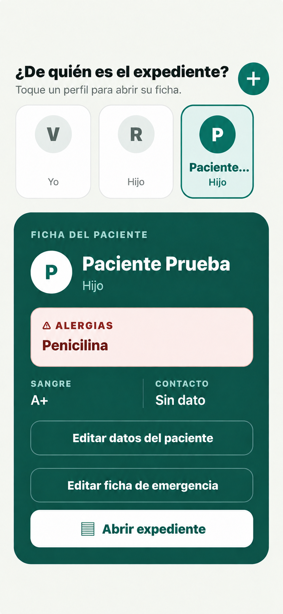
PPS Salud ayuda a resolver el desorden cotidiano de la información personal de salud sin intentar diagnosticar ni sustituir a profesionales.
Reúne antecedentes, alergias, mediciones, vacunas y contactos importantes.
Mantén un expediente separado para cada persona, con sus alergias, tipo de sangre y datos de emergencia.
Conserva especialistas, consultorios, fechas, alertas y rutas para llegar.
Organiza indicaciones, recetas, horarios e historial de tomas.
Guarda documentos, fotografías y enlaces ordenados por fecha y categoría.
Genera un PDF completo o selecciona únicamente la información que deseas enviar.
Crea perfiles separados y consulta de inmediato datos importantes como alergias, tipo de sangre y contacto de emergencia.
Entra directamente a médicos, clínicas, citas, medicamentos, estudios, mediciones, vacunas y antecedentes mediante tarjetas claras y fáciles de identificar.
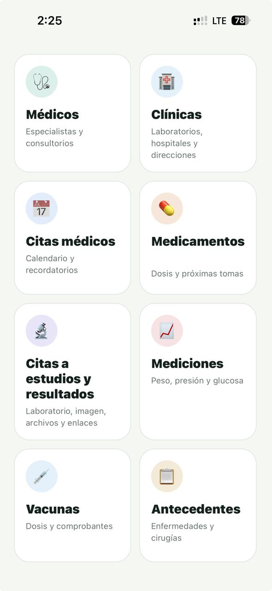
Consulta enfermedades, cirugías, hospitalizaciones, antecedentes familiares, laborales y otros registros sin recorrer pestañas confusas.
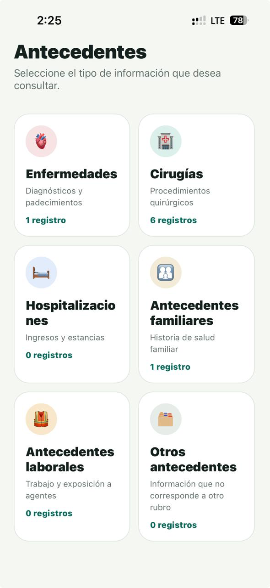
Relaciona cada cita con el médico y el consultorio correctos, recibe recordatorios y abre la ruta desde el detalle de la cita.
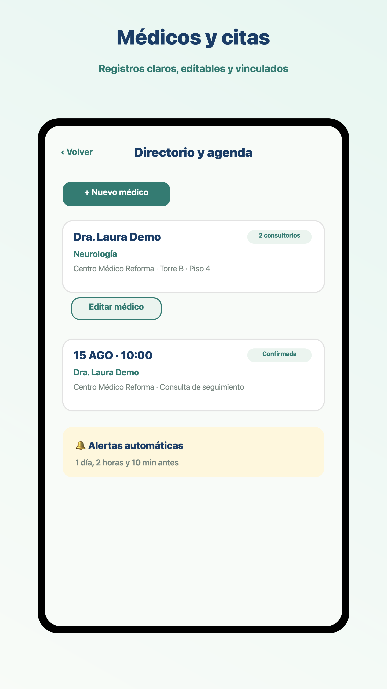
Registra el medicamento, quién lo indicó, su periodo y las tomas programadas. Las indicaciones siempre corresponden al profesional de salud.
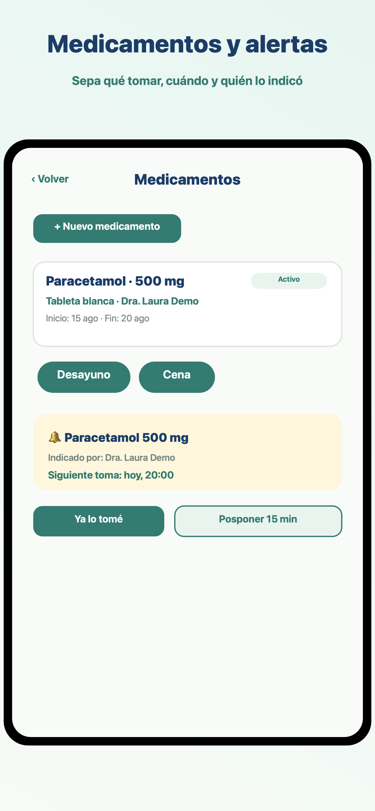
Organiza recetas, laboratorio, radiología y estudios especiales con sus documentos, fotografías o enlaces relacionados.
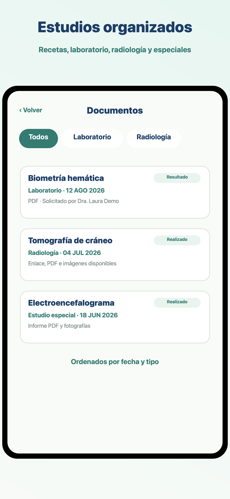
PPS Salud funciona como organizador personal. Tú registras la información y decides cuándo y con quién compartirla.
Estas son pantallas reales y actuales de PPS Salud con información demostrativa.
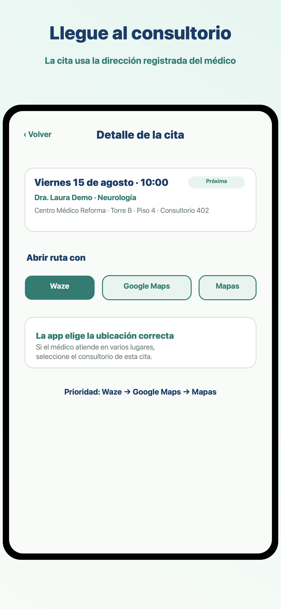
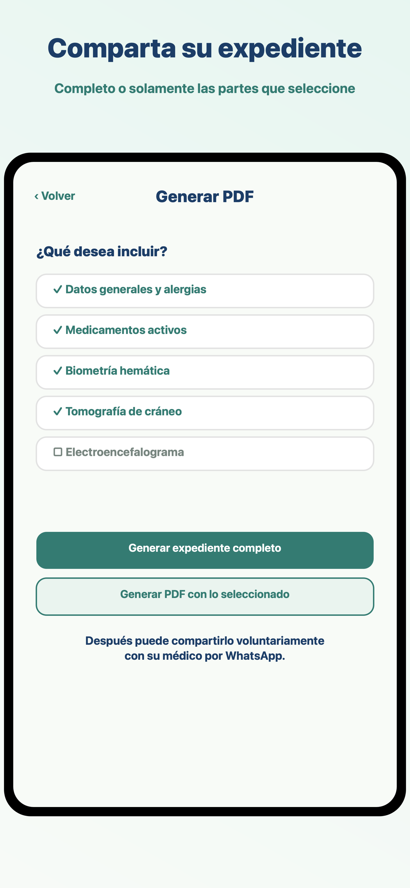
Médicos, laboratorios y farmacias pueden dar a conocer una herramienta que ayuda a organizar citas, estudios, medicamentos y registros de tomas, sin sustituir la atención profesional.
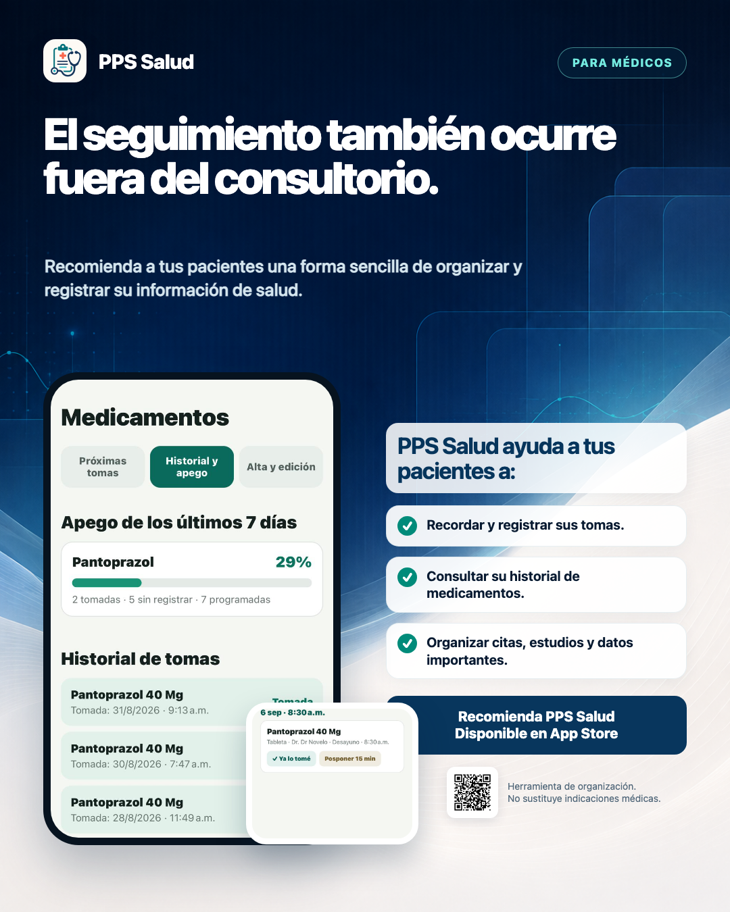
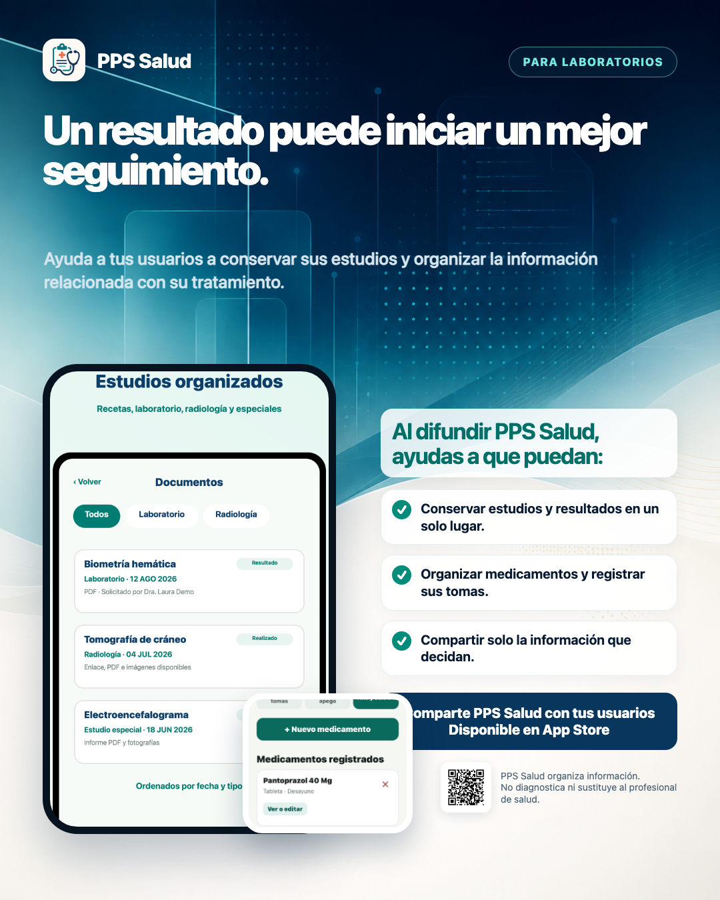
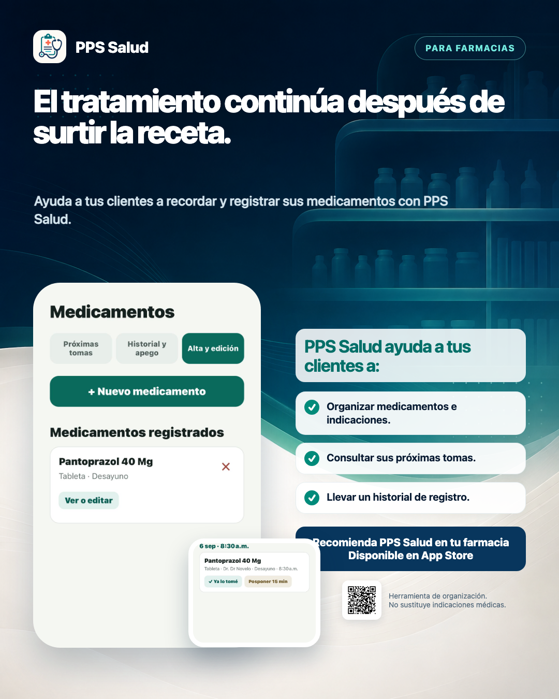
Escanea el código con la cámara de tu teléfono o abre directamente PPS Salud en App Store.
Apple, el logotipo de Apple, iPhone y App Store son marcas comerciales de Apple Inc., registradas en Estados Unidos y otros países y regiones. PPS Salud es una aplicación independiente y no está afiliada ni patrocinada por Apple Inc.